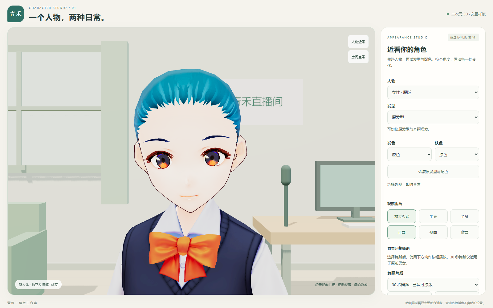

这页保留旧固定版的实际验收。深肤色偏橙，待新版修正；短发耳侧碎发接触仍属候选细节。30 秒原舞动作未重制，已知手臂及服装问题保留。本页不代表普通电脑性能或用户最终观感验收。
原尺寸 1600 × 1000，包含加载、镜头准备与一次主动暂停/恢复；可全屏观看。选择角色不会叠放或拼接影片。
同一原女性，正侧背真实相机截图。静图不代替转头或说话连续验收。

穿着相同风格衣物的同镜头截图，变化幅度有限；不夸大体型差异。所有原图均保留。
范围与失败记录 · 录像时钟摘要 · 实际操作日志 · 快速切换纠正检查